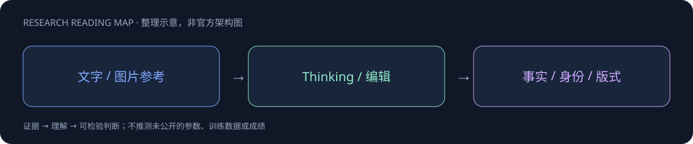

Nano Banana 2.1

一页速览
| 维度 | 当前证据 |
|---|---|
| 发布时间 | 2026-10-06 |
| 类型 | 专项支线 / family · Image |
| 关键事实 1 | 1M 输入 context |
| 关键事实 2 | 图像4K token；文本64K输出 |
| 关键事实 3 | Preference：1050±14（thinking） |
| 检查日期 | 2026-10-13；官方原始资料在同级src/ |
生图能力来自专项路线，不是Gemini再升一个正代
模型卡10月6日发布，依赖Gemini3.6Flash，输入文字/图片支持1M，图像输出4Ktoken、文本64Ktoken。4Ktoken不是保证4K像素分辨率。卡中训练与硬件多处转引基座，不能据此虚构新的扩散结构或参数。
| 官方指标 | Thinking | No Thinking |
|---|---|---|
| T2I总体偏好 | 1050±14 | 1015±13 |
| 信息图设计 | 1048±17 | 1001±17 |
| 信息图事实性 | 0.521 | 0.328 |
| 通用编辑 | 1026±12 | 980±15 |
| 多人物一致性 | 1106±14 | 1068±14 |
偏好分来自并列人评Elo，事实性来自自动评判，两者不能比较大小。Thinking提高平均分不等于每次生成都事实正确。信息图若用于笔记，需要逐项检查文字、箭头与数值，不能以“可生成清楚海报”代替事实审稿。
官方主动列出的失败模式
小字体/长段落仍可能模糊；角色身份不总稳定；局部编辑可能留下涂鸦或错误保留姿势；左右与空间推理仍会混淆。可用多轮修图，但应检验非编辑区域、角色与多参考图对象映射，而不是只验一张最好看的样例。
对 Agent Training 的启发
以上是基于已读官方资料的研究判断，不是官方保证，也没有在本机运行模型推理或复现论文成绩。下一步优先补独立验证器、固定任务/版本和完整失败轨迹，避免只保存最好样例。
一手资料与导航
- [S1] Official Model Card
原始下载文件与SHA-256见 抓取记录。报告保留链接，不抓PDF；动态网页响应若只有壳文件，不将其标成完整离线正文。
📊 相关可视化: Nano Banana 2.1 中文Poster